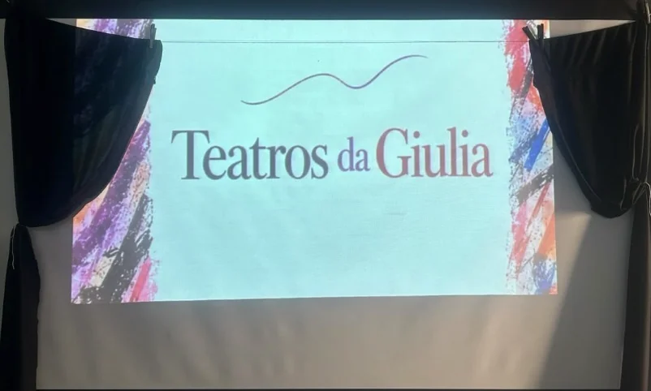

Oficina de teatro

A presença do teatro é um passo decisivo na busca da consolidação de uma presença de si mesmo que não precise ser sempre a mesma. Tanto os personagens a serem representados, quanto o roteiro que é composto sem texto prévio, se mantém em linha de continuidade com a música e a dança. Isso porque, a busca pelas raízes da voz introduz, no limite, condições para o sujeito que pôde se desprender de sua representação habitual, experimente, no papel de um Outro, aquilo que lhe é íntimo. Ao trazer o interior para o exterior por via de personagens, o sujeito começa a se contar de uma forma onde a censura de sua particularidade decai de potência. Assim, se cultivam as condições necessárias para que o sujeito se faça ver e escutar pela boca de um Outro ele mesmo. Não somente se trata da criação de um dispositivo para ser visto e escutado, mas sim que, a partir de então, sua existência inclui um Outro diferente de si mesmo, como lhe sendo íntimo.